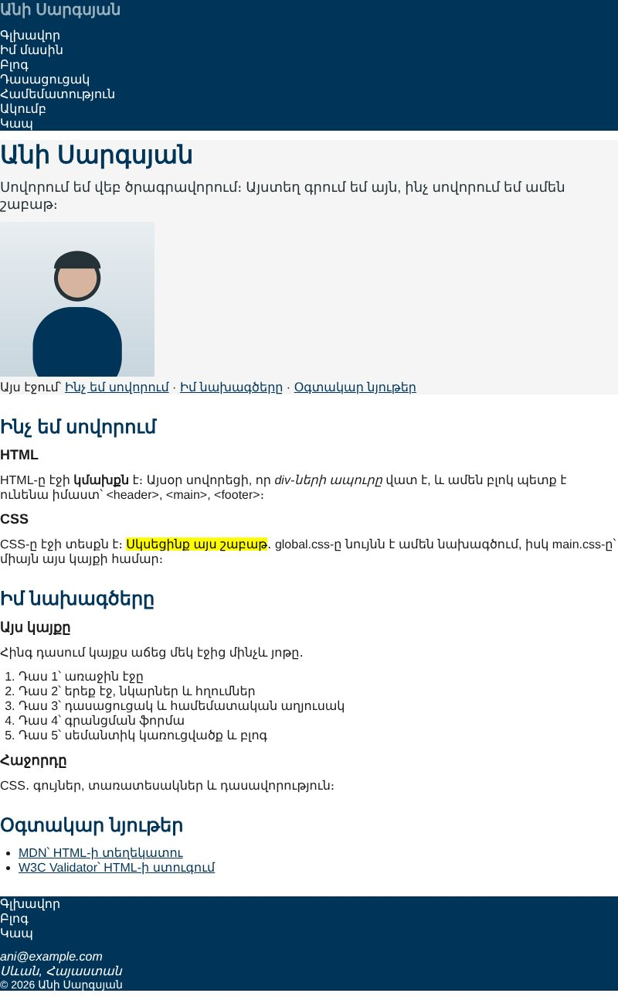
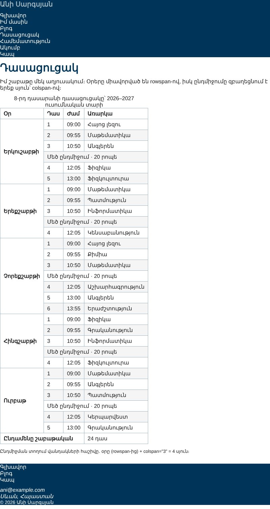

Տնային աշխատանք · HTML Դաս 06 · մինի-նախագիծ
Կայքը ստանում է global.css և main.css։ Գործնականում ես կիրառում սելեկտորները, համակցությունները, վիճակները, կասկադը և ժառանգումը։
Օգտագործիր միայն Դաս 01–06-ը։ Գույները HEX-ով, տառաչափերը px-ով․ :root-ի փոփոխականները, Google Fonts-ը և rem-ը Դաս 07-ում են։ Box model-ը (Դաս 08) և display-ը (Դաս 09) դեռ չենք անցել, ուստի մենյուն մնում է ուղղահայաց։
Կայքը ստանում է առաջին ոճերը՝ գույներ, տառաչափեր, աղյուսակների եզրագծեր և hover/focus վիճակներ։ Reset-ից հետո բրաուզերի բացակները անհետանում են․ մենք մի քանի ժամանակավոր margin-bottom ենք դնում, իսկ իսկական բացակները՝ Դաս 08-ում։ Մենյուն դեռ ուղղահայաց է․ հորիզոնականը՝ Դաս 09-ում։


Սկսիր Դաս 05-ի քո կայքից։ Եթե այն չունես, վերցրու Դաս 05-ի օրինակը։
Դաս 05-ում head-ում արդեն միացրել ենք css/global.css-ը և css/main.css-ը։ Հերթականությունը կարևոր է․ նախ global, հետո main։ Երբ երկու կանոն նույն սպեցիֆիկությունն ունեն, հաղթում է ավելի ուշ գրվածը, ուստի main.css-ը կարող է վերագրել global.css-ը։
Պատճենիր Դաս 06-ի «global.css-ի ծնունդը» բաժնի ամբողջ կոդը՝ reset, հղումներ, ցուցակներ, տեքստի դասեր, .skip-link և .visually-hidden։
Թարմացրու էջը։ Skip link-ը անհետացավ, իսկ առաջին Tab-ով հայտնվում է վերևի ձախ անկյունում։ Ցուցակների կետերը նույնպես անհետացան․ դա list-style: none-ն է։
body {
font-family: Arial, sans-serif;
color: #1a1a1a;
background: #ffffff;
}
h1 { font-size: 32px; color: #003459; }
h2 { font-size: 24px; color: #003459; }
h3 { font-size: 18px; }
table { border-collapse: collapse; }body-ին տվել ենք color և font-family, և դրանք հասել են բոլոր պարբերություններին և ցուցակներին։ Հիմա տուր body-ին border: 2px solid red։ Եզրագիծը կհայտնվի միայն body-ի շուրջը, ոչ ներսի տարրերի․ border-ը չի ժառանգվում։ Ստուգելուց հետո ջնջիր։
Ավելացրու HTML-ում content.md-ի աղյուսակի class-երը։ Հետո գրիր հինգ կանոն դասերով (.site-name, .lead, .meta, .copyright, .btn) և երկուսը id-ով (#intro, #conclusion)։
| Համակցություն | Օրինակ կայքում |
|---|---|
| 1. Ներսում | header a, main a |
| 2. Ուղիղ երեխա | footer > p |
| 3. Երկու դաս միաժամանակ | .btn.btn-light |
| 4. Խմբավորում | th, td |
| 5. Թեգ + դաս | button.btn |
Reset-ը հանել էր ցուցակների կետերը։ Հոդվածի ցուցակներին վերադարձրու դրանք՝ main ul { list-style: disc; padding-left: 24px; }։
header a:hover,
header a:focus-visible { color: #9db4c0; }
main a:hover,
main a:focus-visible { background: #fff3a0; }
.btn:hover,
.btn:focus-visible {
background: #ffffff;
color: #003459;
}
tr:nth-child(even) td { background: #f5f5f5; }Անցիր էջը Tab-ով։ Ամեն հղում և կոճակ պետք է փոխի տեսքը ֆոկուսի ժամանակ, ոչ միայն մկնիկով։ Եթե :focus-visible-ը մոռացել ես, ստեղնաշարով նավարկողը չի տեսնի, թե որտեղ է։
«Կարդալ ավելին» կոճակը գտնվում է main-ի ներսում, ուստի նրա վրա գործում են և՛ main a-ն, և՛ .btn-ը։ Բացիր DevTools → Styles և գտիր, որ կանոններն են ջնջված։ Ինչու՞ է գույնը .btn-ից, իսկ ընդգծումը՝ main a-ից։ Ուղղիր .btn-ին ավելացնելով text-decoration: none։
global.css-ը միացված է main.css-ից առաջ բոլոր յոթ էջում:hover և :focus-visible հղումների և կոճակների համար:nth-child(even)!importantstyle ատրիբուտ HTML-ում| Սխալ | Ինչպես ուղղել |
|---|---|
| main.css-ի կանոնը չի աշխատում | Ֆայլերի հերթականությունը սխալ է, կամ global.css-ում ավելի սպեցիֆիկ սելեկտոր կա։ DevTools → Styles-ում ջնջված կանոնը ցույց է տալիս, թե ով է հաղթել |
Ոճերը չեն երևում pages/-ի էջերում | Ուղին՝ ../css/main.css |
| Ամբողջ էջը «սեղմված» է | Reset-ը հանել է բրաուզերի բացակները։ Առայժմ՝ մի քանի margin-bottom, իսկական լուծումը՝ Դաս 08-ում |
Սրանք Դաս 06-ի տնային աշխատանքի կետերն են։ «մինի-նախագծում» նշվածները արդեն կատարել ես վերևի քայլերում, մնացածը կատարիր առանձին ֆայլերում կամ նույն թղթապանակում։
global.css և main.css։ Միացրու ճիշտ հերթականությամբ։ մինի-նախագծումmain.css-ը առաջինը։ Նկարագրիր՝ ինչ կոտրվեց։ Վերականգնիր։id-ով։ մինի-նախագծում.card p, #hero .btn, ul li a.link, input[type="text"]:focus։ Ստուգիր DevTools-ով։body-ին տուր color և font-family, և ցույց տուր, որ դրանք հասնում են ներսի էլեմենտներին։ Հետո ցույց տուր, որ border-ը չի ժառանգվում։ մինի-նախագծում:hover և :focus-visible վիճակներ կոճակներին ու հղումներին։ Ստուգիր Tab-ով։ մինի-նախագծում:nth-child(even) աղյուսակի տողերի համար (Դաս 3-ի աղյուսակը)։ մինի-նախագծում!important։ մինի-նախագծումԵրբ բաժին 03-ի բոլոր կետերը նշված են, բացիր օրինակը և քո էջը կողք կողքի։ Բացիր երկուսի կոդն էլ խմբագրիչում։ Գտիր մեկ բան, որ դու արել ես այլ կերպ, և մտածիր՝ որն է ավելի հասկանալի և ինչու։ Քո լուծումը կարող է տարբերվել և լինել ճիշտ։